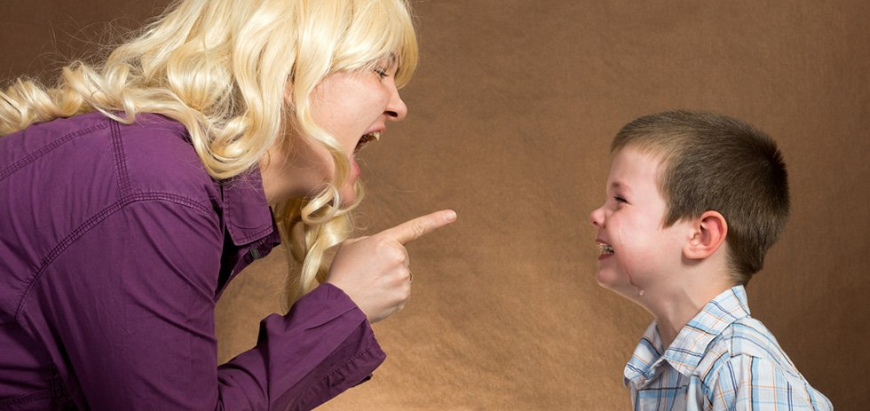

╔═══❖•ೋ° ПСИХОЛОГІЯ °ೋ•❖═══╗
Дитяча психологія допомагає зрозуміти, чому дитина поводиться певним чином і як правильно реагувати на її емоції. Тут розглядаються істерики, страхи, формування прив’язаності та способи побудови довірливих відносин між батьками та дитиною.
『✦』Криза трьох років
· . * .. . °·. · ✦ ·* . • · •. ✶˚ . ·*✧* ˚ · . ·* . ✵. ✧✵ .· ✵ ✫˚ · · .
Криза трьох років у дитини — це ключовий етап її емоційного й психологічного формування. У цей період малюк починає усвідомлювати свою індивідуальність, відчувати власні бажання та встановлювати межі. Часто це виявляється через капризи, протести різного характеру та прагнення до самостійності. Варто пам’ятати, що саме під час цієї кризи дитина отримує перший досвід ухвалення рішень, захисту своїх кордонів і прояву характеру. Завдання батьків полягає не в тому, щоб придушувати ці процеси, а в тому, щоб м’яко направляти та підтримувати свою дитину.
Криза трьох років зазвичай має яскраві прояви, які важко не помітити. Проте молодим батькам важливо знати її особливості, щоб зрозуміти: це нормально і природно. Основні характеристики цього етапу такі:
- Перше і найулюбленіше «ні». Це слово може лунати постійно, що іноді викликає роздратування. Проте пам’ятайте: так дитина намагається висловити свою позицію, показати, що в неї є власна думка. Вона може відмовлятися від їжі, одягу чи іграшок, які ви пропонуєте, наполягаючи на своїх бажаннях.
- Емоційні спалахи та істерики. Це характерно для дітей цього віку через обмежений словниковий запас і недостатнє вміння висловлювати свої почуття. Процеси саморегуляції ще недосконалі, тож сльози, крики чи капризи — це цілком природна реакція.
- Потреба в самостійності. По-справжньому популярна фраза цього періоду: «Я сам/сама». Таке прагнення проявляється не лише у словах, але й у вчинках — дитина намагається сама одягатися, пити воду чи застібати взуття, навіть якщо їй важко. Для батьків важливо запастися терпінням і дати дитині можливість помилятися й вчитися.
- Відмова приймати правила й авторитети. У цьому віці діти починають активно перевіряти межі дозволеного та ставити багато питань на кшталт: «А що буде, якщо…». Вони можуть сперечатися, ігнорувати прохання чи відкрито протестувати. У таких ситуаціях варто чітко окреслювати рамки дозволеного та пояснювати, що саме небезпечно для здоров’я або недопустимо.
Ще одним поширеним явищем є дитяча агресія. Проте її прояви значною мірою залежать від характеру дитини. Якщо малюк зазвичай поводиться спокійно, то навіть у цей непростий період він навряд чи демонструватиме сильну агресивність.
Розібратися у світі трирічної дитини — завдання не з легких, але надзвичайно важливе, якщо ви хочете навчитися адекватно реагувати на її поведінку, включаючи всі ті вперті «я сам», «не хочу» та «ні». Саме в цьому віці малюки проходять через один із найважливіших етапів свого розвитку — формування особистого «Я». Уявіть собі: раніше ваша дитина відчувала себе частиною вас — злитою з мамою чи татом у єдине ціле. Але раптом її свідомість робить величезний крок вперед, і вона починає розуміти: «Я — це я». Це справжнє відкриття! І разом із цим приходить невгамовне бажання ухвалювати власні рішення. Відтепер малюк прагне самостійності, навіть якщо це призводить до помилок чи невдач. Саме тут важливо підтримати прагнення розвиватися й вчитися на власному досвіді.
Ще однин ключовий момент цього віку — потреба у свободі та визнанні. Ви можете здивуватися, але навіть трирічні діти хочуть відчути, що їхні думки мають значення, а почуття — поважають. Для них надзвичайно важливим є відчуття, що вони можуть впливати на своє життя, хоча б у простих рішеннях. Якщо ж їх ігнорувати чи нав’язувати власні правила і одноосібно приймати за них рішення, реакція може бути доволі бурхливою: від образи до слізної істерики. Однак це ще не все. Третій рік життя — це період активного тестування кордонів дозволеного. Малюк починає буквально «перевіряти ґрунт», аби зрозуміти, що зі світом можна, а чого не варто робити. Чи можна вмовити маму? Чи вдасться зачарувати тата усмішкою? Цей період навчання наслідками є невіддільним від послідовності у вихованні. Чіткі межі та узгоджені рішення батьків допомагають дитині краще адаптуватися до нових правил та відчувати безпеку. У протилежному випадку — якщо правила постійно змінюються або їх зовсім немає — дитина може почуватися дезорієнтованою, а її опір посилиться. Попри все, малюк у цьому віці все ще дуже потребує вас — вашої фізичної і емоційної присутності. Тиха підтримка, обійми та м'яка увага допоможуть дитині краще впоратися з потоком нових емоцій і навчитися їх контролювати. Адже для неї це новий і такий важливий досвід.
Отже, трирічний вік — це не лише черговий етап розвитку дитини, але й певний виклик для батьків. Тут потрібно давати свободу, але водночас тримати чіткі межі й бути поруч, допомагаючи малюкові зробити впевнені кроки у його великому світі самостійності й відповідальності.
Батькам важливо пам’ятати, що криза трирічного віку — це не прояв упертості чи поганої поведінки дитини, а природний етап її розвитку. Від їхньої реакції залежить, наскільки легко та спокійно мине цей період у житті родини. Перше і головне правило — зберігайте спокій. Ви — дорослі, ви вже розумієте цей світ, тоді як дитина лише вчиться ним жити. Спокійна реакція допомагає дитині повернутись до рівноваги. Якщо малюк кричить, відповідати йому тим же — марно і навіть шкідливо, адже це тільки підсилює напругу. Спробуйте глибоко вдихнути, зробити паузу, заспокоїтися й говорити лагідним голосом. Діти легко відчувають ваш емоційний стан і часто переймають його.
Ще один ключовий принцип — послідовність у правилах. Якщо ви щось забороняєте, дотримуйтеся цього постійно, незалежно від обставин чи настрою. Це формує у дитини відчуття стабільності та передбачуваності світу. Наприклад, якщо цукерки перед обідом заборонені одного дня, ця заборона має залишатися і наступного разу, навіть якщо ви втомлені чи поспішаєте.
Давайте дитині можливість обирати, навіть у дрібних питаннях. Те, що здається нам незначущим, для малечі може бути важливим. Наприклад, дозволяйте дитині самостійно вибирати одяг у садочок, запропонувавши 2-3 варіанти на вибір. Таким чином вона почувається самостійною та отримує досвід ухвалення рішень, що водночас знижує ймовірність протесту. Надзвичайно важливо підтримувати малюка, а не ламати його волю. Впертість і протест — це нормальна реакція трирічної дитини, а для батьків це виклик. Важливо не ламати характер і не змушувати дитину підкорятися силою. Натомість вона потребує вашої підтримки й пояснень. Наприклад, якщо ви забираєте її з майданчика, попередьте заздалегідь: скажіть, скільки часу залишилося для гри, або поясніть причину — «мамі потрібно приготувати вечерю» чи «скоро стемніє».
— Не кричіть і не принижуйте дитину. Гнів і грубість не допоможуть встановити порядок. Натомість вони викликають у малюка страх і руйнують довіру. Особисті образи або знецінення почуттів можуть залишити глибокі емоційні рани на довгі роки.
— Не ігноруйте почуттів дитини. Фраза «Це ж нічого страшного» ніяк не допомагає дитині заспокоїтись, а лише змушує її думати, що її почуття неважливі. Емоції — це природне явище. Покажіть дитині, що відчувати різне — нормально, адже і дорослі не завжди перебувають у піднесеному настрої.
— Не покладайтеся лише на покарання як метод виховання. Покарання може викликати страх у дитини, але вона не зрозуміє причин своїх помилок. Натомість ефективніше пояснити їй ситуацію та разом знайти вихід із неї. Головна мета дисципліни — навчання, а не залякування.
Пам’ятайте: хоч цей період буває складним, саме від вас залежить, якими будуть стосунки з дитиною у майбутньому. Ви вже маєте життєвий досвід та розуміння світу, яких бракує дитині. Її завдання — вчитися, а ваше — допомагати
Криза трьох років — це природний етап у розвитку дитини, проте інколи він може затягуватися і супроводжуватися тривожними ознаками, які вимагають уваги фахівця. Якщо типові прояви цього періоду не зникають навіть після досягнення 4-річного віку, це вже привід задуматися. Кожна дитина унікальна, але існують загальні рамки норми, відхилення від яких не варто ігнорувати. Особливої уваги потребують додаткові симптоми:
- безсоння чи значні труднощі зі сном
- відсутність апетиту або його суттєве погіршення
- спалахи агресії
- замкнутість або сильна відчуженість
Такі сигнали вказують на необхідність консультації з дитячим психологом, який допоможе визначити причини цього стану та запропонує шляхи вирішення. Ще одним тривожним дзвіночком є виражене порушення вікової норми. Якщо щоденні істерики стають звичайною справою, а дитина демонструє схильність до самоушкодження чи шкодить іншим, або взагалі уникає контактів, час негайно звертатися до спеціаліста.
Криза трьох років — це не просто примхи чи каприз. Це потужний етап перебудови в організмі малечі, своєрідна буря перед штилем. Подібний масштаб змін повториться вже в підлітковому віці. Саме в цей період закладаються важливі основи особистості: самостійність, уміння контролювати емоції та усвідомлення власного "я". Головне для батьків — не панікувати. Зберігайте терпіння, показуйте малюкові свою любов і одночасно допомагайте йому освоїти сімейні та соціальні правила. Важливо встановити чіткі й зрозумілі межі дозволеного, але не переходити у крайність надмірної строгості.
Пам’ятайте: цей непростий життєвий етап можна перетворити на можливість для росту й зміцнення ваших відносин із дитиною. З підтримкою та розумінням ваш трирічний мандрівник пройде крізь цю бурю і стане впевненішим у своїх силах, сильнішим та ще ближчим до вас.
Ознаки кризи трьох років
Криза трьох років у дитини — це ключовий етап її емоційного й психологічного формування. У цей період малюк починає усвідомлювати свою індивідуальність, відчувати власні бажання та встановлювати межі. Часто це виявляється через капризи, протести різного характеру та прагнення до самостійності. Варто пам’ятати, що саме під час цієї кризи дитина отримує перший досвід ухвалення рішень, захисту своїх кордонів і прояву характеру. Завдання батьків полягає не в тому, щоб придушувати ці процеси, а в тому, щоб м’яко направляти та підтримувати свою дитину.
Криза трьох років зазвичай має яскраві прояви, які важко не помітити. Проте молодим батькам важливо знати її особливості, щоб зрозуміти: це нормально і природно. Основні характеристики цього етапу такі:
- Перше і найулюбленіше «ні». Це слово може лунати постійно, що іноді викликає роздратування. Проте пам’ятайте: так дитина намагається висловити свою позицію, показати, що в неї є власна думка. Вона може відмовлятися від їжі, одягу чи іграшок, які ви пропонуєте, наполягаючи на своїх бажаннях.
- Емоційні спалахи та істерики. Це характерно для дітей цього віку через обмежений словниковий запас і недостатнє вміння висловлювати свої почуття. Процеси саморегуляції ще недосконалі, тож сльози, крики чи капризи — це цілком природна реакція.
- Потреба в самостійності. По-справжньому популярна фраза цього періоду: «Я сам/сама». Таке прагнення проявляється не лише у словах, але й у вчинках — дитина намагається сама одягатися, пити воду чи застібати взуття, навіть якщо їй важко. Для батьків важливо запастися терпінням і дати дитині можливість помилятися й вчитися.
- Відмова приймати правила й авторитети. У цьому віці діти починають активно перевіряти межі дозволеного та ставити багато питань на кшталт: «А що буде, якщо…». Вони можуть сперечатися, ігнорувати прохання чи відкрито протестувати. У таких ситуаціях варто чітко окреслювати рамки дозволеного та пояснювати, що саме небезпечно для здоров’я або недопустимо.
Ще одним поширеним явищем є дитяча агресія. Проте її прояви значною мірою залежать від характеру дитини. Якщо малюк зазвичай поводиться спокійно, то навіть у цей непростий період він навряд чи демонструватиме сильну агресивність.
Що відбувається з дитиною: як зрозуміти трирічний вік
Розібратися у світі трирічної дитини — завдання не з легких, але надзвичайно важливе, якщо ви хочете навчитися адекватно реагувати на її поведінку, включаючи всі ті вперті «я сам», «не хочу» та «ні». Саме в цьому віці малюки проходять через один із найважливіших етапів свого розвитку — формування особистого «Я». Уявіть собі: раніше ваша дитина відчувала себе частиною вас — злитою з мамою чи татом у єдине ціле. Але раптом її свідомість робить величезний крок вперед, і вона починає розуміти: «Я — це я». Це справжнє відкриття! І разом із цим приходить невгамовне бажання ухвалювати власні рішення. Відтепер малюк прагне самостійності, навіть якщо це призводить до помилок чи невдач. Саме тут важливо підтримати прагнення розвиватися й вчитися на власному досвіді.
Ще однин ключовий момент цього віку — потреба у свободі та визнанні. Ви можете здивуватися, але навіть трирічні діти хочуть відчути, що їхні думки мають значення, а почуття — поважають. Для них надзвичайно важливим є відчуття, що вони можуть впливати на своє життя, хоча б у простих рішеннях. Якщо ж їх ігнорувати чи нав’язувати власні правила і одноосібно приймати за них рішення, реакція може бути доволі бурхливою: від образи до слізної істерики. Однак це ще не все. Третій рік життя — це період активного тестування кордонів дозволеного. Малюк починає буквально «перевіряти ґрунт», аби зрозуміти, що зі світом можна, а чого не варто робити. Чи можна вмовити маму? Чи вдасться зачарувати тата усмішкою? Цей період навчання наслідками є невіддільним від послідовності у вихованні. Чіткі межі та узгоджені рішення батьків допомагають дитині краще адаптуватися до нових правил та відчувати безпеку. У протилежному випадку — якщо правила постійно змінюються або їх зовсім немає — дитина може почуватися дезорієнтованою, а її опір посилиться. Попри все, малюк у цьому віці все ще дуже потребує вас — вашої фізичної і емоційної присутності. Тиха підтримка, обійми та м'яка увага допоможуть дитині краще впоратися з потоком нових емоцій і навчитися їх контролювати. Адже для неї це новий і такий важливий досвід.
Отже, трирічний вік — це не лише черговий етап розвитку дитини, але й певний виклик для батьків. Тут потрібно давати свободу, але водночас тримати чіткі межі й бути поруч, допомагаючи малюкові зробити впевнені кроки у його великому світі самостійності й відповідальності.
Як мають діяти батьки під час кризи трьох років
Батькам важливо пам’ятати, що криза трирічного віку — це не прояв упертості чи поганої поведінки дитини, а природний етап її розвитку. Від їхньої реакції залежить, наскільки легко та спокійно мине цей період у житті родини. Перше і головне правило — зберігайте спокій. Ви — дорослі, ви вже розумієте цей світ, тоді як дитина лише вчиться ним жити. Спокійна реакція допомагає дитині повернутись до рівноваги. Якщо малюк кричить, відповідати йому тим же — марно і навіть шкідливо, адже це тільки підсилює напругу. Спробуйте глибоко вдихнути, зробити паузу, заспокоїтися й говорити лагідним голосом. Діти легко відчувають ваш емоційний стан і часто переймають його.
Ще один ключовий принцип — послідовність у правилах. Якщо ви щось забороняєте, дотримуйтеся цього постійно, незалежно від обставин чи настрою. Це формує у дитини відчуття стабільності та передбачуваності світу. Наприклад, якщо цукерки перед обідом заборонені одного дня, ця заборона має залишатися і наступного разу, навіть якщо ви втомлені чи поспішаєте.
Давайте дитині можливість обирати, навіть у дрібних питаннях. Те, що здається нам незначущим, для малечі може бути важливим. Наприклад, дозволяйте дитині самостійно вибирати одяг у садочок, запропонувавши 2-3 варіанти на вибір. Таким чином вона почувається самостійною та отримує досвід ухвалення рішень, що водночас знижує ймовірність протесту. Надзвичайно важливо підтримувати малюка, а не ламати його волю. Впертість і протест — це нормальна реакція трирічної дитини, а для батьків це виклик. Важливо не ламати характер і не змушувати дитину підкорятися силою. Натомість вона потребує вашої підтримки й пояснень. Наприклад, якщо ви забираєте її з майданчика, попередьте заздалегідь: скажіть, скільки часу залишилося для гри, або поясніть причину — «мамі потрібно приготувати вечерю» чи «скоро стемніє».
Чого робити не варто у кризовий період:
— Не кричіть і не принижуйте дитину. Гнів і грубість не допоможуть встановити порядок. Натомість вони викликають у малюка страх і руйнують довіру. Особисті образи або знецінення почуттів можуть залишити глибокі емоційні рани на довгі роки.
— Не ігноруйте почуттів дитини. Фраза «Це ж нічого страшного» ніяк не допомагає дитині заспокоїтись, а лише змушує її думати, що її почуття неважливі. Емоції — це природне явище. Покажіть дитині, що відчувати різне — нормально, адже і дорослі не завжди перебувають у піднесеному настрої.
— Не покладайтеся лише на покарання як метод виховання. Покарання може викликати страх у дитини, але вона не зрозуміє причин своїх помилок. Натомість ефективніше пояснити їй ситуацію та разом знайти вихід із неї. Головна мета дисципліни — навчання, а не залякування.
Пам’ятайте: хоч цей період буває складним, саме від вас залежить, якими будуть стосунки з дитиною у майбутньому. Ви вже маєте життєвий досвід та розуміння світу, яких бракує дитині. Її завдання — вчитися, а ваше — допомагати
Тривожні сигнали: коли час звернутися до спеціаліста
Криза трьох років — це природний етап у розвитку дитини, проте інколи він може затягуватися і супроводжуватися тривожними ознаками, які вимагають уваги фахівця. Якщо типові прояви цього періоду не зникають навіть після досягнення 4-річного віку, це вже привід задуматися. Кожна дитина унікальна, але існують загальні рамки норми, відхилення від яких не варто ігнорувати. Особливої уваги потребують додаткові симптоми:
- безсоння чи значні труднощі зі сном
- відсутність апетиту або його суттєве погіршення
- спалахи агресії
- замкнутість або сильна відчуженість
Такі сигнали вказують на необхідність консультації з дитячим психологом, який допоможе визначити причини цього стану та запропонує шляхи вирішення. Ще одним тривожним дзвіночком є виражене порушення вікової норми. Якщо щоденні істерики стають звичайною справою, а дитина демонструє схильність до самоушкодження чи шкодить іншим, або взагалі уникає контактів, час негайно звертатися до спеціаліста.
Криза трьох років — це не просто примхи чи каприз. Це потужний етап перебудови в організмі малечі, своєрідна буря перед штилем. Подібний масштаб змін повториться вже в підлітковому віці. Саме в цей період закладаються важливі основи особистості: самостійність, уміння контролювати емоції та усвідомлення власного "я". Головне для батьків — не панікувати. Зберігайте терпіння, показуйте малюкові свою любов і одночасно допомагайте йому освоїти сімейні та соціальні правила. Важливо встановити чіткі й зрозумілі межі дозволеного, але не переходити у крайність надмірної строгості.
Пам’ятайте: цей непростий життєвий етап можна перетворити на можливість для росту й зміцнення ваших відносин із дитиною. З підтримкою та розумінням ваш трирічний мандрівник пройде крізь цю бурю і стане впевненішим у своїх силах, сильнішим та ще ближчим до вас.
『✦』Якщо малюк ревнує до новонародженого
· . * .. . °·. · ✦ ·* . • · •. ✶˚ . ·*✧* ˚ · . ·* . ✵. ✧✵ .· ✵ ✫˚ · · .
У багатьох родинах поява новонародженого часто стає випробуванням не лише для батьків, але й для старших дітей. Ревнощі до нового члена сім’ї – це природна реакція, особливо якщо до цього старша дитина була в центрі уваги. Але погодьтеся, як матусі, вам боляче бачити, як ваша перша дитина дивиться на молодшого братика чи сестричку із сумішшю заздрощів і недовіри. Гарна новина полягає в тому, що ця динаміка зовсім не є незмінною, і ви можете допомогти старшій дитині відчувати себе впевнено та комфортно за нових обставин. Підозри та ревнощі можуть проявлятися у різний спосіб. Часом старші діти можуть відкрито говорити, що їм «набридло» немовля або навіть мріяти повернути його назад до лікарні. Інколи ж їхня реакція проявляється через надмірну турботу: вони занадто міцно обіймають або не відходять від малюка ні на крок, намагаючись зайняти ваше місце. Ваше завдання як батьків – зробити так, щоб старша дитина не відчувала, наче її замінили чи витіснили з родини. Якщо їй буде комфортно і вона почуватиметься важливою та потрібною, це автоматично знизить рівень напруги й допоможе уникнути негативних емоцій до немовляти. Нижче ми розглянемо кілька простих кроків, які допоможуть зміцнити гармонію в родині.
Перед появою малюка у вашій родині старша дитина звикла отримувати вашу безмежну увагу. Тепер ситуація змінилася, і це може викликати у неї занепокоєння чи навіть протест. Дуже важливо говорити з дитиною відверто: пояснити, що новонароджений потребує багато турботи, тому що він ще маленький і зовсім безпорадний. Запевніть вашу старшу дитину у своїй любові до неї, наголосивши, що ця любов анітрохи не зменшилася з народженням братика чи сестрички. Щоб показати старшій дитині, наскільки вона теж важлива для вас, можна влаштувати маленький «сеанс ностальгії». Разом перегляньте її фотографії з першого року життя. Розкажіть, як ви тримали її на руках, як піклувалися про неї і як вона теж колись була такою ж крихіткою. Поясніть, як багато спільного у неї з малюком зараз – це допоможе розвинути почуття спорідненості та розуміння. Це лише перший крок на шляху до побудови гармонійних стосунків між вашими дітьми. Уважність до емоцій старшої дитини й готовність підтримати її у перехідний період допоможуть створити теплу атмосферу у вашій родині. Наступного разу поговоримо про те, як залучити старшу дитину до догляду за немовлям і зробити її найкращим помічником мами!
Іноді старші діти можуть поводитися трохи грубо з немовлятами, просто не усвідомлюючи, наскільки ті тендітні та чутливі. Ваше завдання — допомогти малюку зрозуміти, що його молодший братик чи сестричка поки що занадто малесенькі, щоб брати участь у веселих іграх. Але це не означає, що взаємодія неможлива! Навчіть старшу дитину самому ніжно торкатись маленької ручки, пропонуйте показати малюкові улюблену м'яку іграшку або разом порахувати пальчики на маленьких ніжках. Щоб дати приклад, можна почати з ляльки, демонструючи малюкові рухи та повторюючи прості поради на кшталт: «Дивись, потрібно ніжно, делікатно — так ми доторкаємося до братика чи сестрички».
Діти часто прагнуть бути корисними та відчувати свою значимість, тому важливо створити атмосферу, де старша дитина буде пишатися своєю роллю. Запрошуйте її допомагати вам із доглядом за немовлям — наприклад, потримати пляшечку під час годування. Не забудьте сказати, як вам пощастило, що малеча має такого чудового старшого брата або сестру! Якщо ваш малюк хоче ніжно обійняти новонародженого або посидіти поруч, зробіть це безпечно: посадіть їх разом на диван або тримайте обох на руках. Це допоможе створити позитивний зв’язок між дітьми в ранньому віці.
Поява нового члена родини неодмінно змінює ритм життя і той час, який ви раніше приділяли старшій дитині. Щоб компенсувати це, спробуйте організувати окремі моменти для кожної дитини. Наприклад, доки тато годує немовля, ви можете побути зі старшим: обійняти його, почитати книжку або просто провести час у грі. Це допоможе дитині не почуватись покинутою та забутою в умовах нової родинної динаміки. Ваші дбайливість і увага допоможуть дітям усе більше цінувати одне одного та створити гармонійні відносини вже з перших днів. Маленькі кроки в цьому напрямку формуватимуть теплі спогади на все життя!
У багатьох родинах поява новонародженого часто стає випробуванням не лише для батьків, але й для старших дітей. Ревнощі до нового члена сім’ї – це природна реакція, особливо якщо до цього старша дитина була в центрі уваги. Але погодьтеся, як матусі, вам боляче бачити, як ваша перша дитина дивиться на молодшого братика чи сестричку із сумішшю заздрощів і недовіри. Гарна новина полягає в тому, що ця динаміка зовсім не є незмінною, і ви можете допомогти старшій дитині відчувати себе впевнено та комфортно за нових обставин. Підозри та ревнощі можуть проявлятися у різний спосіб. Часом старші діти можуть відкрито говорити, що їм «набридло» немовля або навіть мріяти повернути його назад до лікарні. Інколи ж їхня реакція проявляється через надмірну турботу: вони занадто міцно обіймають або не відходять від малюка ні на крок, намагаючись зайняти ваше місце. Ваше завдання як батьків – зробити так, щоб старша дитина не відчувала, наче її замінили чи витіснили з родини. Якщо їй буде комфортно і вона почуватиметься важливою та потрібною, це автоматично знизить рівень напруги й допоможе уникнути негативних емоцій до немовляти. Нижче ми розглянемо кілька простих кроків, які допоможуть зміцнити гармонію в родині.
Розмовляйте та пояснюйте потреби новонародженого
Перед появою малюка у вашій родині старша дитина звикла отримувати вашу безмежну увагу. Тепер ситуація змінилася, і це може викликати у неї занепокоєння чи навіть протест. Дуже важливо говорити з дитиною відверто: пояснити, що новонароджений потребує багато турботи, тому що він ще маленький і зовсім безпорадний. Запевніть вашу старшу дитину у своїй любові до неї, наголосивши, що ця любов анітрохи не зменшилася з народженням братика чи сестрички. Щоб показати старшій дитині, наскільки вона теж важлива для вас, можна влаштувати маленький «сеанс ностальгії». Разом перегляньте її фотографії з першого року життя. Розкажіть, як ви тримали її на руках, як піклувалися про неї і як вона теж колись була такою ж крихіткою. Поясніть, як багато спільного у неї з малюком зараз – це допоможе розвинути почуття спорідненості та розуміння. Це лише перший крок на шляху до побудови гармонійних стосунків між вашими дітьми. Уважність до емоцій старшої дитини й готовність підтримати її у перехідний період допоможуть створити теплу атмосферу у вашій родині. Наступного разу поговоримо про те, як залучити старшу дитину до догляду за немовлям і зробити її найкращим помічником мами!
Навчайте дитину бути ніжною
Іноді старші діти можуть поводитися трохи грубо з немовлятами, просто не усвідомлюючи, наскільки ті тендітні та чутливі. Ваше завдання — допомогти малюку зрозуміти, що його молодший братик чи сестричка поки що занадто малесенькі, щоб брати участь у веселих іграх. Але це не означає, що взаємодія неможлива! Навчіть старшу дитину самому ніжно торкатись маленької ручки, пропонуйте показати малюкові улюблену м'яку іграшку або разом порахувати пальчики на маленьких ніжках. Щоб дати приклад, можна почати з ляльки, демонструючи малюкові рухи та повторюючи прості поради на кшталт: «Дивись, потрібно ніжно, делікатно — так ми доторкаємося до братика чи сестрички».
Допоможіть відчути свою важливість
Діти часто прагнуть бути корисними та відчувати свою значимість, тому важливо створити атмосферу, де старша дитина буде пишатися своєю роллю. Запрошуйте її допомагати вам із доглядом за немовлям — наприклад, потримати пляшечку під час годування. Не забудьте сказати, як вам пощастило, що малеча має такого чудового старшого брата або сестру! Якщо ваш малюк хоче ніжно обійняти новонародженого або посидіти поруч, зробіть це безпечно: посадіть їх разом на диван або тримайте обох на руках. Це допоможе створити позитивний зв’язок між дітьми в ранньому віці.
Не забувайте про якісний час для старшої дитини
Поява нового члена родини неодмінно змінює ритм життя і той час, який ви раніше приділяли старшій дитині. Щоб компенсувати це, спробуйте організувати окремі моменти для кожної дитини. Наприклад, доки тато годує немовля, ви можете побути зі старшим: обійняти його, почитати книжку або просто провести час у грі. Це допоможе дитині не почуватись покинутою та забутою в умовах нової родинної динаміки. Ваші дбайливість і увага допоможуть дітям усе більше цінувати одне одного та створити гармонійні відносини вже з перших днів. Маленькі кроки в цьому напрямку формуватимуть теплі спогади на все життя!
『✦』Як не кричати на дитину?
· . * .. . °·. · ✦ ·* . • · •. ✶˚ . ·*✧* ˚ · . ·* . ✵. ✧✵ .· ✵ ✫˚ · · .
Навіть найдбайливіші батьки іноді не витримують і зриваються. Багато мам і тат часто підвищують голос через те, що це стало звичкою, перейнятою від їхніх батьків. Інші зриваються тільки в моменти сильного розчарування чи гніву. Проте важливо усвідомлювати, що крик може завдати серйозної шкоди самооцінці дитини, її емоційному стану та підірвати довірливі стосунки між вами. Діти лякаються, коли на них кричать. Вони сприймають крик як загрозу. У відповідь це може проявитися двома способами: одні діти починають огризатися і теж кричати, інші намагаються втекти або повністю відсторонитися від ситуації — як фізично, так і емоційно. Наші малюки здобувають навички спілкування, наслідуючи нас, дорослих. Якщо ми свідомо кричимо на дитину, щоб змусити її виконати нашу волю, це є формою залякування. У результаті дитина засвоює та повторює таку модель поведінки з іншими. Якщо ж ми кричимо мимоволі, втрачаючи контроль над собою, малюк усвідомлює, що висловлювати свої емоції через крик — це нормально і прийнятно.
Втім, навчитися контролювати емоції і мінімізувати негативні наслідки від крику можливо. Зменшення його впливу на психіку дитини — це важливий крок до здорових та міцних стосунків у родині.
Поговоріть з дитиною про ваше бажання працювати над собою, щоб уникнути підвищення голосу, і попросіть її допомогти вам у цьому. Запропонуйте дитині сигналізувати вам, коли вона помітить, що ви починаєте сердитися. Наприклад, можна показати це жестом, прикриваючи долонями вуха. Також дитина може сказати: «Ти зараз кричиш, мені це неприємно» або «Будь ласка, поговори зі мною спокійно, адже ти мене любиш». Важливо сприймати такі нагадування серйозно і реагувати на них. Це можуть бути три кроки: «перемотування», «налагодження» і «повторний запуск».
Наприклад:
Перемотування: «Дякую, що нагадав. Я втратила самоконтроль, бо була стурбована».
Налагодження: «Вибач мені, ти не заслуговуєш на крик. Те, що ти зробив, було неправильно, але й кричати я теж не мала права».
Повторний запуск: «Давай почнемо спочатку. Мене засмучує, що ти не хочеш мене слухати».
- Він дає дитині змогу захистити себе від неприйнятної поведінки без конфлікту чи уникання розмови.
- Забезпечує підтримку почуття власної гідності, показуючи дитині, що вона не заслуговує несправедливого ставлення.
- Зміцнює емоційний зв’язок між вами та дитиною, адже такий підхід демонструє вашу повагу до її потреб і почуттів.
Ці рекомендації подані Пем Лео в її книзі «Як налагодити теплі взаємини з дітьми».
Завжди знаходьте час для себе, хоча б годину на день. Це може бути проста процедура догляду, як-от маска для обличчя, читання книги, заняття улюбленим хобі чи просто час на відпочинок. Піклуючись про себе, ви відновлюєте сили, повертаєте собі рівновагу й гарний настрій. Замість сварок і криків можна використовувати інші підходи. Наприклад, один мій знайомий в таких ситуаціях зберігає спокій і говорить м’яко, навіть співучо: "Ну що це таке?" Тон має значення — без підвищення голосу слова звучать зовсім інакше. Якщо все ж важко втриматися від гострих слів, уникайте образ і докорів. Наприклад, таких слів, як "дурень" або "нетяма". Краще придумати щось кумедне та без образи — скажімо, можна сказати: "Ох ти, барабулька-торохтулька!" Це розрядить атмосферу й дозволить дитині відчути, що ви її любите, навіть коли говорите про некоректну поведінку. А щоб не накопичувати агресію, іноді варто перетворити конфлікт у гру: скорчити смішну гримасу, розіграти пантоміму чи навіть заричати або захрюкати від "злості". Гумор — справді найкращі ліки від гніву. Головне у взаємодії з дитиною — ваше внутрішнє самопочуття. Щаслива мама — це і спокійна, і турботлива мама. Буває, що потрібен суворий тон, але дитина завжди повинна бути впевнена у вашій любові. Щовечора перед сном нагадуйте їй про це: обійміть її, поцілуйте і скажіть теплі слова. Так вона розумітиме, що навіть у момент, коли ви її сварите за незадовільну поведінку (наприклад, за небезпечні пустощі з плитою), це лише епізод, а не ознака розчарування в ній.
Я згадала випадок: одна мама, розлютившись на свою доньку, замість того щоб кричати чи карати, з жартівливо сердитим обличчям сказала: "От наздожену тебе!" Донька побігла від неї сміючись, а мама поспішила за нею. Ситуація, яка могла стати конфліктом, за мить перетворилася на веселу гру. Іноді діти просто потребують пояснення. Варто ділитися з ними своїм настроєм: розповідайте, якщо ви втомлені чи засмучені. Вони зрозуміють більше, ніж ви очікуєте, а ваша щирість допоможе легше пережити момент невдоволення чи несподіваний спалах емоцій. Звичайно, бувають ситуації, коли необхідно підвищити голос. Однак важливо слідкувати за тим, щоб у ваших словах не було ненависті чи зневаги — саме це найбільше ранить і лякає дитину. Замість того щоб ображати чи принижувати особистість дитини, розповідайте, що саме вона зробила неправильно. Завжди наголошуйте: твоя поведінка була поганою, але ти — чудова і хороша людина. Не звинувачуйте дитину загалом і уникайте ярликів! Ми часто можемо контролювати свої емоції в розмові з іншими людьми — наприклад із начальством або незнайомцями. То чому ж із власними дітьми ми часом дозволяємо собі зірватися? Можливо, нам варто навчитися поводитися спокійніше не зі страху втратити роботу перед босом, а через прагнення зберегти довіру наших дітей?
10 порад для батьків, як уникнути крику на дитину
Навіть найдбайливіші батьки іноді не витримують і зриваються. Багато мам і тат часто підвищують голос через те, що це стало звичкою, перейнятою від їхніх батьків. Інші зриваються тільки в моменти сильного розчарування чи гніву. Проте важливо усвідомлювати, що крик може завдати серйозної шкоди самооцінці дитини, її емоційному стану та підірвати довірливі стосунки між вами. Діти лякаються, коли на них кричать. Вони сприймають крик як загрозу. У відповідь це може проявитися двома способами: одні діти починають огризатися і теж кричати, інші намагаються втекти або повністю відсторонитися від ситуації — як фізично, так і емоційно. Наші малюки здобувають навички спілкування, наслідуючи нас, дорослих. Якщо ми свідомо кричимо на дитину, щоб змусити її виконати нашу волю, це є формою залякування. У результаті дитина засвоює та повторює таку модель поведінки з іншими. Якщо ж ми кричимо мимоволі, втрачаючи контроль над собою, малюк усвідомлює, що висловлювати свої емоції через крик — це нормально і прийнятно.
Втім, навчитися контролювати емоції і мінімізувати негативні наслідки від крику можливо. Зменшення його впливу на психіку дитини — це важливий крок до здорових та міцних стосунків у родині.

Поговоріть з дитиною про ваше бажання працювати над собою, щоб уникнути підвищення голосу, і попросіть її допомогти вам у цьому. Запропонуйте дитині сигналізувати вам, коли вона помітить, що ви починаєте сердитися. Наприклад, можна показати це жестом, прикриваючи долонями вуха. Також дитина може сказати: «Ти зараз кричиш, мені це неприємно» або «Будь ласка, поговори зі мною спокійно, адже ти мене любиш». Важливо сприймати такі нагадування серйозно і реагувати на них. Це можуть бути три кроки: «перемотування», «налагодження» і «повторний запуск».
Наприклад:
Перемотування: «Дякую, що нагадав. Я втратила самоконтроль, бо була стурбована».
Налагодження: «Вибач мені, ти не заслуговуєш на крик. Те, що ти зробив, було неправильно, але й кричати я теж не мала права».
Повторний запуск: «Давай почнемо спочатку. Мене засмучує, що ти не хочеш мене слухати».
Цей підхід, у якому дитині дозволено нагадувати дорослим про недопустимість крику, має важливі переваги:
- Він дає дитині змогу захистити себе від неприйнятної поведінки без конфлікту чи уникання розмови.
- Забезпечує підтримку почуття власної гідності, показуючи дитині, що вона не заслуговує несправедливого ставлення.
- Зміцнює емоційний зв’язок між вами та дитиною, адже такий підхід демонструє вашу повагу до її потреб і почуттів.
Ці рекомендації подані Пем Лео в її книзі «Як налагодити теплі взаємини з дітьми».
Поради для батьків
Завжди знаходьте час для себе, хоча б годину на день. Це може бути проста процедура догляду, як-от маска для обличчя, читання книги, заняття улюбленим хобі чи просто час на відпочинок. Піклуючись про себе, ви відновлюєте сили, повертаєте собі рівновагу й гарний настрій. Замість сварок і криків можна використовувати інші підходи. Наприклад, один мій знайомий в таких ситуаціях зберігає спокій і говорить м’яко, навіть співучо: "Ну що це таке?" Тон має значення — без підвищення голосу слова звучать зовсім інакше. Якщо все ж важко втриматися від гострих слів, уникайте образ і докорів. Наприклад, таких слів, як "дурень" або "нетяма". Краще придумати щось кумедне та без образи — скажімо, можна сказати: "Ох ти, барабулька-торохтулька!" Це розрядить атмосферу й дозволить дитині відчути, що ви її любите, навіть коли говорите про некоректну поведінку. А щоб не накопичувати агресію, іноді варто перетворити конфлікт у гру: скорчити смішну гримасу, розіграти пантоміму чи навіть заричати або захрюкати від "злості". Гумор — справді найкращі ліки від гніву. Головне у взаємодії з дитиною — ваше внутрішнє самопочуття. Щаслива мама — це і спокійна, і турботлива мама. Буває, що потрібен суворий тон, але дитина завжди повинна бути впевнена у вашій любові. Щовечора перед сном нагадуйте їй про це: обійміть її, поцілуйте і скажіть теплі слова. Так вона розумітиме, що навіть у момент, коли ви її сварите за незадовільну поведінку (наприклад, за небезпечні пустощі з плитою), це лише епізод, а не ознака розчарування в ній.
Я згадала випадок: одна мама, розлютившись на свою доньку, замість того щоб кричати чи карати, з жартівливо сердитим обличчям сказала: "От наздожену тебе!" Донька побігла від неї сміючись, а мама поспішила за нею. Ситуація, яка могла стати конфліктом, за мить перетворилася на веселу гру. Іноді діти просто потребують пояснення. Варто ділитися з ними своїм настроєм: розповідайте, якщо ви втомлені чи засмучені. Вони зрозуміють більше, ніж ви очікуєте, а ваша щирість допоможе легше пережити момент невдоволення чи несподіваний спалах емоцій. Звичайно, бувають ситуації, коли необхідно підвищити голос. Однак важливо слідкувати за тим, щоб у ваших словах не було ненависті чи зневаги — саме це найбільше ранить і лякає дитину. Замість того щоб ображати чи принижувати особистість дитини, розповідайте, що саме вона зробила неправильно. Завжди наголошуйте: твоя поведінка була поганою, але ти — чудова і хороша людина. Не звинувачуйте дитину загалом і уникайте ярликів! Ми часто можемо контролювати свої емоції в розмові з іншими людьми — наприклад із начальством або незнайомцями. То чому ж із власними дітьми ми часом дозволяємо собі зірватися? Можливо, нам варто навчитися поводитися спокійніше не зі страху втратити роботу перед босом, а через прагнення зберегти довіру наших дітей?
『✦』Вигорання батьків
· . * .. . °·. · ✦ ·* . • · •. ✶˚ . ·*✧* ˚ · . ·* . ✵. ✧✵ .· ✵ ✫˚ · · .
Батьківське вигорання є станом фізичного, емоційного та психічного виснаження, спричиненим постійним стресом через догляд за дитиною та виконання батьківських обов’язків. Воно проявляється втратою сил, дратівливістю та відчуттям безпорадності.
Фізичні: постійна втома, головний біль, порушення сну.
Емоційні: апатія, підвищена дратівливість, різкі зміни настрою, почуття провини чи сорому.
Поведінкові: виконання домашніх обов’язків на автоматі, віддалення від дитини, прагнення уникати спілкування.
Зменште прагнення до перфекціонізму. Бути ідеальним батьком цілодобово неможливо. Навчіться розставляти пріоритети та відмовлятися від другорядних завдань.
Просіть допомоги та делегуйте обов’язки. Співпраця з партнером, підтримка родини чи друзів допоможуть знайти час для відпочинку та відновлення сил.
Дбайте про базові потреби вашого організму. Збалансоване харчування, достатнє споживання води та регулярний сон є основою фізичного та емоційного благополуччя.
Установлюйте чіткі кордони. Щоденний побут поглинає багато енергії, тому важливо щодня приділяти хоча б 15-30 хвилин для себе — це може бути хобі, прогулянка або читання.
Спілкуйтеся з однодумцями. Діалог із іншими батьками може допомогти усвідомити, що ваші переживання є нормальними, і ви не самі у своїх труднощах.
Зверніться до сімейного лікаря. Він допоможе оцінити загальний стан вашого здоров’я, зробити необхідні аналізи чи направити до фахівця для отримання базової психологічної допомоги за програмою ВООЗ mhGAP. Використовуйте ресурси платформи «Ти як?». Тут ви знайдете корисні інструменти та поради для збереження психічного здоров’я і емоційної рівноваги.
Пам’ятайте, турбота про себе — це не привілей, а необхідна умова для гармонійного життя всієї родини!
Батьківське вигорання є станом фізичного, емоційного та психічного виснаження, спричиненим постійним стресом через догляд за дитиною та виконання батьківських обов’язків. Воно проявляється втратою сил, дратівливістю та відчуттям безпорадності.
Головні прояви цього стану можна поділити на декілька категорій:
Фізичні: постійна втома, головний біль, порушення сну.
Емоційні: апатія, підвищена дратівливість, різкі зміни настрою, почуття провини чи сорому.
Поведінкові: виконання домашніх обов’язків на автоматі, віддалення від дитини, прагнення уникати спілкування.
Щоб попередити або подолати вигорання, варто звернути увагу на такі рекомендації:
Зменште прагнення до перфекціонізму. Бути ідеальним батьком цілодобово неможливо. Навчіться розставляти пріоритети та відмовлятися від другорядних завдань.
Просіть допомоги та делегуйте обов’язки. Співпраця з партнером, підтримка родини чи друзів допоможуть знайти час для відпочинку та відновлення сил.
Дбайте про базові потреби вашого організму. Збалансоване харчування, достатнє споживання води та регулярний сон є основою фізичного та емоційного благополуччя.
Установлюйте чіткі кордони. Щоденний побут поглинає багато енергії, тому важливо щодня приділяти хоча б 15-30 хвилин для себе — це може бути хобі, прогулянка або читання.
Спілкуйтеся з однодумцями. Діалог із іншими батьками може допомогти усвідомити, що ваші переживання є нормальними, і ви не самі у своїх труднощах.
Якщо ви відчуваєте потребу у додатковій підтримці:
Зверніться до сімейного лікаря. Він допоможе оцінити загальний стан вашого здоров’я, зробити необхідні аналізи чи направити до фахівця для отримання базової психологічної допомоги за програмою ВООЗ mhGAP. Використовуйте ресурси платформи «Ти як?». Тут ви знайдете корисні інструменти та поради для збереження психічного здоров’я і емоційної рівноваги.
Пам’ятайте, турбота про себе — це не привілей, а необхідна умова для гармонійного життя всієї родини!